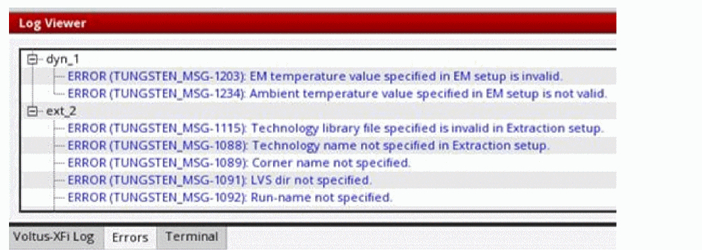

Voltus-XFi Log Viewer
The Log Viewer assistant displays the runtime information, including all the information, warning, and error messages issued by Voltus-XFi during the current session. The Log Viewer assistant includes 3 tabs:
-
Voltus-XFi Log - prints status or information messages that indicate progression of extraction and analysis runs. For example, during extraction, you might encounter the following short messages:
INFO (TUNGSTEN_MSG-1062): Started Extraction ext_1 on 2022-Jun-13 21:51:12...
INFO (TUNGSTEN_MSG-1107): Finished Extraction ext_1 on 2022-Jun-13 21:52:26 -
Error - displays warning or error messages pertaining to the extraction setup, analysis setup, and simulation runs. The messages are grouped under the specific run names.
 -
Terminal - displays the integrated terminal to access the current working directory, log and result files. This can be useful as you do not have to switch windows or modify the state of an existing terminal to perform a quick command-line task.
Related Topics
Return to top